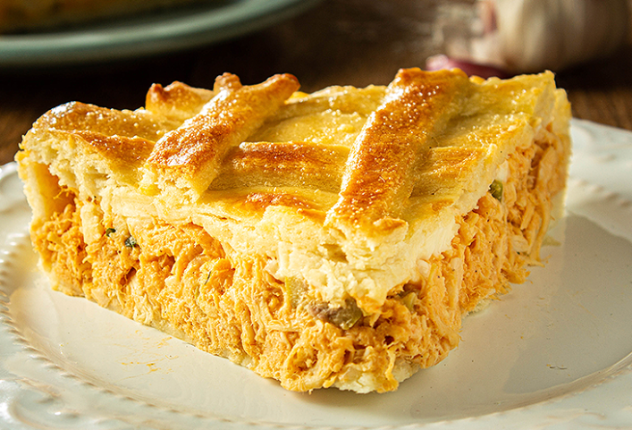

Torta de Frango

Descrição
Essa receita de torta de frango de liquidificador é deliciosa e muito prática para o dia a dia.
Além de ser perfeita para levar para a festa junina da família.
Ingredientes
Recheio
- 500g de peito de frango sem pele
- 4 colheres de sopa de óleo
- 1 cebola picada
- 1 xícara (chá) de ervilhas
- Pimentta-do-reino a gosto
- 1/2 litro de caldo de galinha
- 1 dente de alho amassado
- 3 tomates sem pele e sem sementes
- sal a gosto
Massa
- 250ml de leite
- 3/4 xícara (chá) de óleo
- 2 ovos
- 1 xícara e 1/2 (chá) de farinha de trigo
- 1 colher (sopa) de fermento em pó
- Queijo ralado a gosto
- sal a gosto
Passo a passo
Recheio
- Cozinhe o peito de frango no caldo até ficar macio.
- Separe 1 xícara (chá) de caldo do cozimento e reserve.
- Refogue os demais ingredientes e acrescente as ervilhas por último.
- Desfie o frango, misture ao caldo e deixe cozinhar até secar.
Massa
- Bata o leite, o óleo e os ovos no liquidificador em velocidade baixa.
- Separe 1 xícara (chá) de caldo do cozimento e reserve.
- Despeje metade da massa em uma forma untada e adicione o recheio sobre ela.
- Cubra com o restante de massa e o queijo ralado.
- Leve ao forno preaquecido (180° C) até dourar.